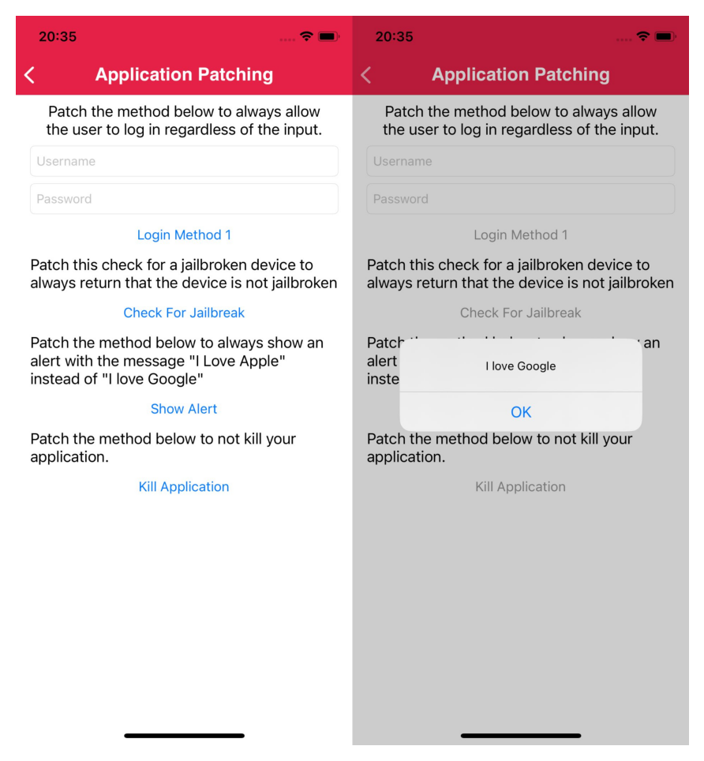
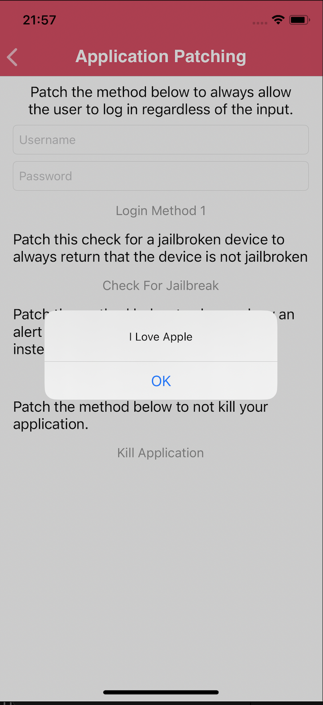
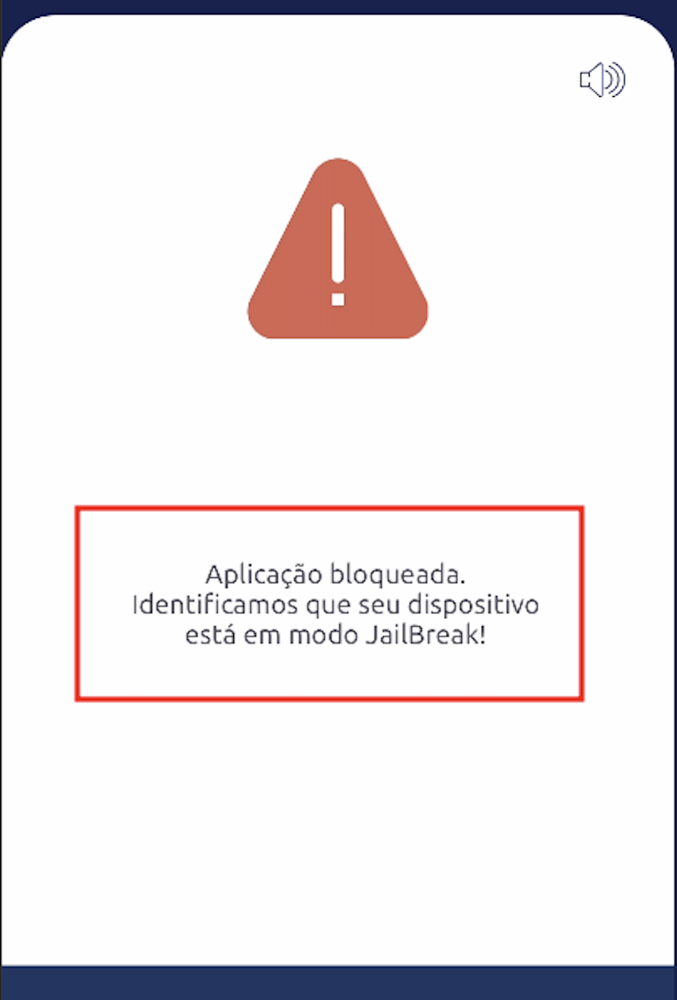
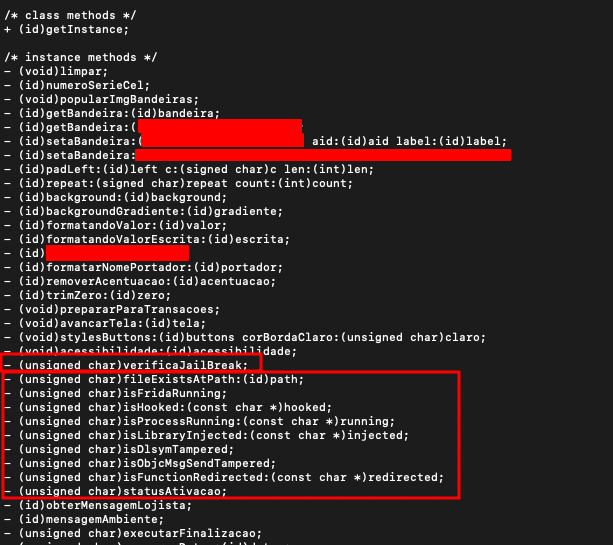
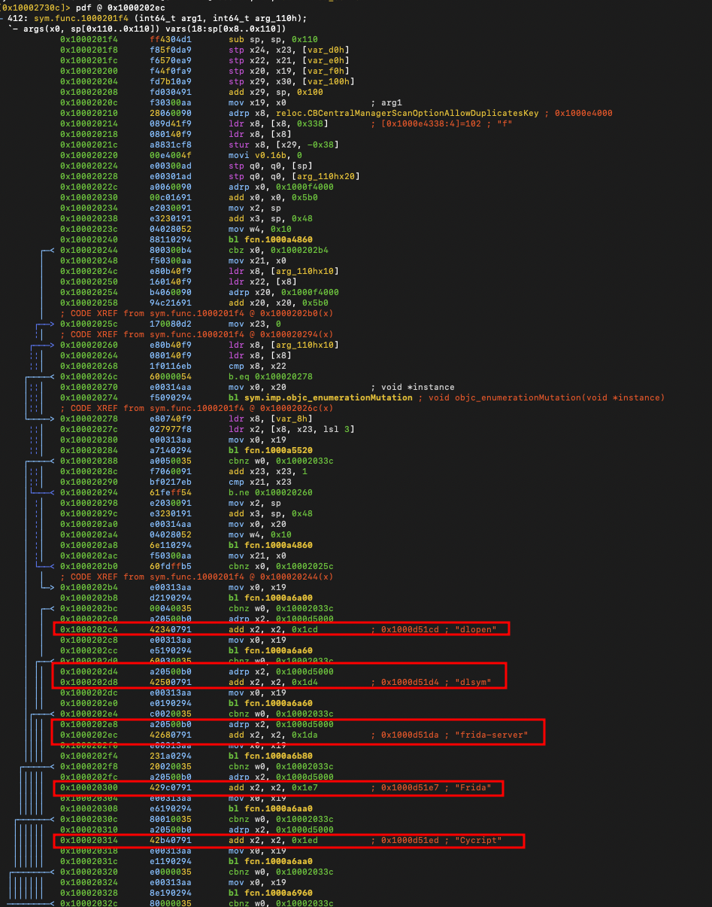
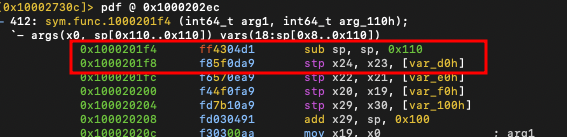
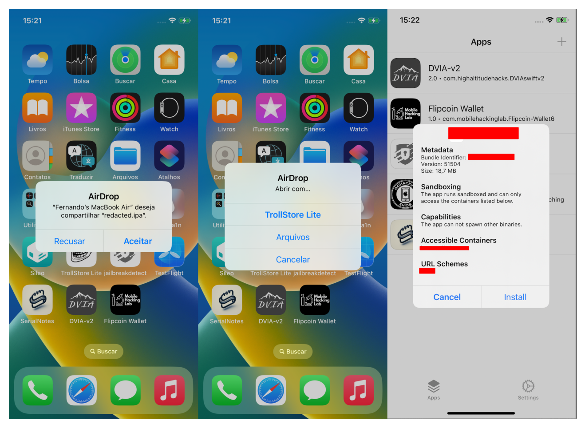
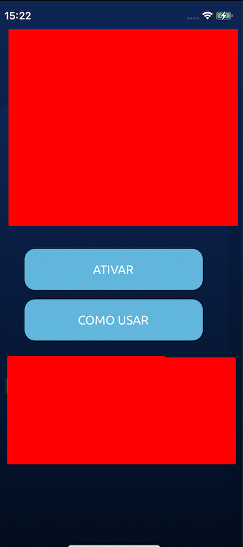

Introdução
Este post faz parte dos meus novos estudos sobre pentest e engenharia reversa em aplicativos para iOS. Acredito que alguns dos assuntos não são novos para algumas pessoas, mas como é algo novo para mim e tenho o hábito de fazer anotações durante meus estudos e/ou aplicar o que foi aprendido de uma forma diferente, para assim conseguir fixar o tópico, esses posts serão a maneira de brincar e fixar o conhecimento. No primeiro momento veremos um aplicativo feito apenas para testes chamado DVIA-v2. entretanto, logo adiante veremos também a mesma técnica sendo aplicada em um outro app que está na App Store e pertence a um determinado banco. Assim é possível entender que apesar de simples a técnica é útil também no mundo real.
Para esse teste estou utilizando um Iphone X com iOS 16.7.11. O Jailbreak que estou utilizando é o Palera1n.
O que é patching?
Patch é a modificação de um binário que está compilado. Geralmente quem realiza um patch em um binário não tem acesso ao código. Realizar um patch em um binário pode ser feito por diversos motivos, como por exemplo: corrigir um bug, alterar partes do código para evitar restrições, adicionar ou remover features e outros.
Instalando o App.
Depois de baixar o aplicativo, fiz a instalação do mesmo de modo rápido, com o uso do airdrop. Enviei o .IPA para o iphone de teste e instalei utilizando o Tweak TrollStore lite.
O desafio é de level básico, como podemos ver na imagem a seguir. Precisamos mudar a frase "I love Google" para "I love Apple".
Decompilando o App
Agora que sabemos o que precisamos fazer, vamos decompilar o IPA e brincar com o binário dele. O arquivo IPA é um arquivo zipado que pode ser descompactado e compactado novamente, como veremos a seguir durante o patching do binário. Durante esse processo vamos precisar do radare2 instalado. Caso não tenha ainda, você pode utilizar o gerenciador de pacotes do seu SO. No ambiente macOS a instalação pode ser feita via brew.
brew install radare2Descompactado o ipa e indo até o binário. O nome do binário é o mesmo nome do pacote IPA
file DVIA-v2.ipa
unzip DVIA-v2.ipa
cd Payload/DVIA-v2.appAgora podemos utilizar o radare2 para abrir o binário em modo de escrita.
r2 -w DVIA-v2Agora que estamos no radare2 com o binário aberto, vamos precisar fazer a análise do binário. o comando 'aaa' faz a análise do binário. O comando 'izz' faz a pesquisa por strings no app e o '~' faz o filtro pela string que queremos.
[0x1001a9790]> aaa[0x1001a9790]> izz ~Google
11522 0x0035eeb6 0x10035eeb6 13 14 4.__TEXT.__cstring ascii I love Google
11868 0x003620a6 0x1003620a6 15 16 4.__TEXT.__cstring ascii GoogleAnalytics
21286 0x0046bac2 0x10046bac2 13 14 ascii GoogleClickId
26104 0x005b35e8 0x1005b35e8 31 32 ascii _kGAIInputCampaignGoogleClickId
Agora para irmos até a string e confirmar ela, podemos utilizar o comando 's' que é seek e vai até determinado endereço. Também vamos utilizar o comando para printar a string terminada em zero que é 'psz'
[0x1001a9790]> s 0x10035eeb6[0x10035eeb6]> psz
I love GoogleAgora que confirmamos a string, podemos fazer a troca dela. Primeiro utilizaremos um comando do bash dentro do próprio r2. Para passar esse comando bash podemos utilizar o simbolo '!' com o comando que desejamos, como por exemplo '!ls', '!whoami' e etc. Depois o comando 'wx' para fazer a escrita em hexadecimal. Podemos utilizar o 'psz' mais uma vez para confirmar que a troca foi realizada e logo em seguida sair do radare2 com 'q'.
[0x10035eeb6]>!echo -n "I Love Apple " | xxd -p
2d6e2049204c6f7665204170706c6520[0x10035eeb6]>wx 49204c6f7665204170706c6520
[0x10035eeb6]> psz
I Love Apple
[0x10035eeb6]> q
Perfeito, agora que fizemos o nosso patch, podemos compactar a pasta Payload e fazer a instalação do IPA em nosso dispositivo. Eu vou utilizar o AirDrop para o envio do APP.
zip -r app-modificado.ipa Payload

Bypass Detecções em um app real
Agora que sabemos como fazer um patch com o radare2 vamos utilizar isso em um app da loja, e em um contexto de bypass de detecção de root, frida, debbuging e outros.
Ao executarmos o aplicativo no dispositvo, veremos uma tela de bloqueio por causa da detecção de jailbreak.

A primeira coisa que precisamos fazer é fazer o download do ipa que está no dispositivo e foi baixado da loja. Existem diferentes formas de fazer o download do ipa e umas das mais comuns é o uso da ferramenta frida-ios-dump
Eu vou utilizar uma tool que fiz(ainda precisa de ajustes), mas me ajuda a automatizar a tarefa de baixar com scp.
#!/usr/bin/env bash
set -euo pipefail
usage() {
cat < [DIRETORIO_SAIDA] [USUARIO_SSH]
IP_DO_DISPOSITIVO IP do iOS (ex.: 10.11.1.1)
NOME_DA_APP Nome da pasta .app (com ou sem .app)
Ex.: DVIA-v2 ou DVIA-v2.app
DIRETORIO_SAIDA (opcional) pasta local onde salvar o IPA (padrão: diretório atual)
USUARIO_SSH (opcional) usuário SSH (padrão: root)
usage:
$0 192.168.0.100 DVIA-v2 ~/Downloads root
EOF
exit 1
}
if [[ $# -lt 2 ]]; then
usage
fi
DEVICE_IP="$1"
APP_DIR_NAME="$2"
OUTPUT_DIR="${3:-$PWD}"
SSH_USER="${4:-root}"
if [[ "$APP_DIR_NAME" != *.app ]]; then
APP_DIR_NAME="${APP_DIR_NAME}.app"
fi
IPA_BASENAME="${APP_DIR_NAME%.app}"
echo "[*] Dispositivo: ${DEVICE_IP}"
echo "[*] Usuário SSH: ${SSH_USER}"
echo "[*] Nome da app: ${APP_DIR_NAME}"
echo "[*] IPA final: ${IPA_BASENAME}.ipa"
echo
echo "[*] Procurando app '${APP_DIR_NAME}' no device..."
APP_PATH=$(ssh "${SSH_USER}@${DEVICE_IP}" \
"find /var/containers/Bundle/Application -maxdepth 3 -type d -name '$APP_DIR_NAME' 2>/dev/null | head -n 1" || true)
if [[ -z "${APP_PATH}" ]]; then
echo "[!] Não consegui encontrar '${APP_DIR_NAME}' em /var/containers/Bundle/Application"
echo " Verifique se o app está instalado e se o nome está correto."
exit 1
fi
echo "[+] App encontrada em: ${APP_PATH}"
echo
echo "[*] Verificando se 'zip' está instalado no device..."
if ! ssh "${SSH_USER}@${DEVICE_IP}" "command -v zip >/dev/null 2>&1"; then
echo "[!] O comando 'zip' NÃO está instalado no device."
echo " Instale o pacote 'zip' via Cydia/Sileo e tente novamente."
exit 1
fi
echo "[*] Criando Payload e empacotando IPA no device..."
ssh "${SSH_USER}@${DEVICE_IP}" "
set -e
echo ' - Limpando /tmp antigo...'
rm -rf /tmp/Payload /tmp/${IPA_BASENAME}.ipa
echo ' - Criando diretório /tmp/Payload...'
mkdir -p /tmp/Payload
echo ' - Copiando app para /tmp/Payload/...'
cp -R '$APP_PATH' /tmp/Payload/
echo ' - Gerando /tmp/${IPA_BASENAME}.ipa...'
cd /tmp && zip -r '${IPA_BASENAME}.ipa' Payload >/dev/null
"
echo "[+] IPA criado no device em: /tmp/${IPA_BASENAME}.ipa"
echo
mkdir -p "${OUTPUT_DIR}"
echo "[*] Transferindo IPA para o computador (${OUTPUT_DIR})..."
scp "${SSH_USER}@${DEVICE_IP}:/tmp/${IPA_BASENAME}.ipa" "${OUTPUT_DIR}/"
echo "[*] Limpando arquivos temporários no device..."
ssh "${SSH_USER}@${DEVICE_IP}" "rm -rf /tmp/Payload /tmp/${IPA_BASENAME}.ipa"
echo
echo "[✓] Pronto!"
echo " IPA salvo em: ${OUTPUT_DIR}/${IPA_BASENAME}.ipa" ./dump-ipa.sh 192.168.0.105 redacted . root
unzip redacted.ipa
[*] Dispositivo: 192.168.0.105
[*] Usuário SSH: root
[*] Nome da app: redacted.app
[*] IPA final: redacted.ipa
[*] Procurando app 'redacted.app' no device...
(root@192.168.0.105) Password for root@iPhone-de-n3k00n3:
[+] App encontrada em: /var/containers/Bundle/Application/7C6ACC13-CF89-4643-B14D-315B9F5F267B/redacted.app
[*] Verificando se 'zip' está instalado no device...
(root@192.168.0.105) Password for root@iPhone-de-n3k00n3:
[*] Criando Payload e empacotando IPA no device...
(root@192.168.0.105) Password for root@iPhone-de-n3k00n3:
- Limpando /tmp antigo...
- Criando diretório /tmp/Payload...
- Copiando app para /tmp/Payload/...
- Gerando /tmp/redacted.ipa...
[+] IPA criado no device em: /tmp/redacted.ipa
Agora podemos pesquisar um pouco sobre jailbreak dentro da aplicação. Vamos utilizar a ferramenta ipsw para extrair as classes e métodos da aplicação. Também vamos utilizar a ferramenta ag que é um grep com esteróides. :D
ipsw class-dump ./redacted --headers -o ./class_dump
cd class-dump
ag jailbreak
EstadoAplicacao.h
59:@property unsigned char erroJailBreak;
98:- (unsigned char)verificaJailBreak;
vim EstadoAplicacao.h +98
Aqui podemos ter uma noção melhor da classe e seus métodos, assim podemos pesquisar melhor dentro do radare2 e sermos mais diretos.
cd Payload/redacted.app
r2 -w redactedPodemos perceber que existe uma verificação de frida. Então, vamos pesquisar por frida-server ou frida para vermos a função que faz isso.
[0x10002730c]> izz ~frida
4998 0x000d51da 0x1000d51da 12 13 9.__TEXT.__cstring ascii frida-server
[0x10002730c]> axt @0x1000d51da
[0x10002730c]> pdf @0x1000202ec

Aqui podemos perceber que muita checagem está sendo feita. Não vou entrar nos detalhes de cada uma, mas se tiver dificuldade com o disassemble de Arm64, recomendo utilizar o comando 'pdc' ao invés do comando 'pdf', assim terá um visão do código em C e vai conseguir revisar melhor. Invista um tempo entendendo a função...
Ok. vamos fazer um patch nas primeiras instruções da função para que ela retorne assim que for iniciada. Logo depois vamos instalar o app para ver se deu tudo certo.

[0x10002730c]> wa mov x0, 0 @ 0x1000201f4
INFO: Written 4 byte(s) (mov x0, 0) = wx 000080d2 @ 0x1000201f4
[0x10002730c]> wa ret @ 0x1000201f8
INFO: Written 4 byte(s) (ret) = wx c0035fd6 @ 0x1000201f8
[0x10002730c]> pd2 @0x1000201f4
412: sym.func.1000201f4 (int64_t arg1, int64_t arg_110h);
│ `- args(x0, sp[0x110..0x110]) vars(18:sp[0x8..0x110])
│ 0x1000201f4 000080d2 mov x0, 0
│ 0x1000201f8 c0035fd6 ret

Aqui está o bypass do app pronto, podemos utilizar e debugar melhor mais funções do aplicativo
